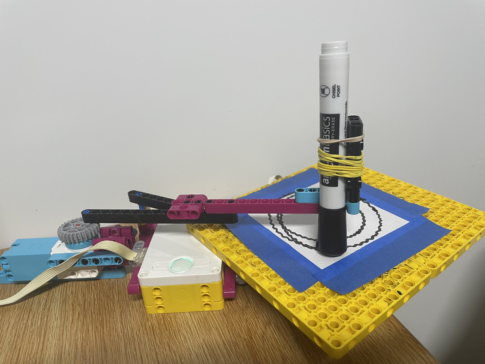

Project Portfolio

Project 5: Spirograph Machine
In this project, we had to design a Spirograph drawing machine that would create geometric designs using the motors in the kit. I struggled most with creating intricate designs. My first design used two motors, but it kept overlapping and making messy patterns, so I switched to a design with a single motor for the moving arm. The single-motor design, along with the small notepad paper, made it difficult to create complex geometric patterns. If I did this project again, I would explore ways to adjust the design to create more complex patterns.